📊 Key Diagrams
Core microeconomics diagrams for quick reference and revision
1. Production Possibilities Frontier (PPF)
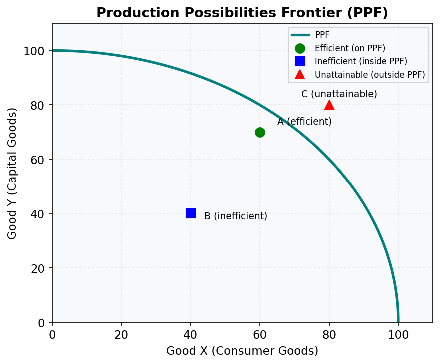
The PPF shows the maximum combinations of two goods an economy can produce with given resources and technology.
- On the curve — efficient (all resources fully employed)
- Inside the curve — inefficient (idle resources)
- Outside the curve — currently unattainable
- Bowed-out shape — increasing opportunity costs (resources not equally suited to all uses)
- Outward shift — economic growth (more resources or better technology)
Relevant lessons: M01.L02
2. Supply and Demand: Market Equilibrium
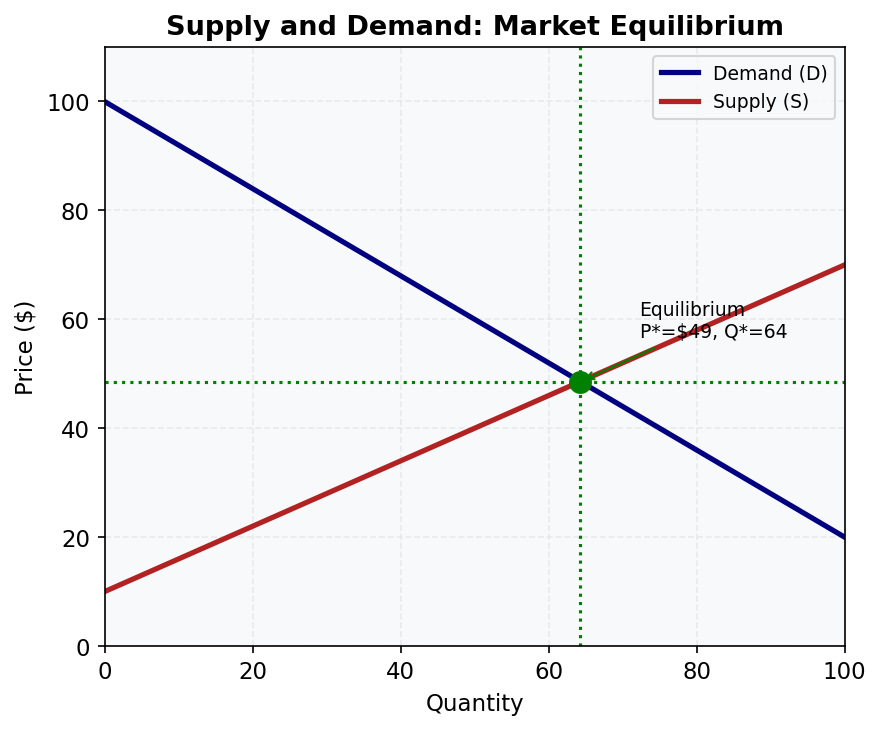
The market equilibrium is where the quantity demanded equals quantity supplied, determining price P and quantity Q.
- Demand slopes down — law of demand (higher price → lower quantity demanded)
- Supply slopes up — law of supply (higher price → higher quantity supplied)
- Shortage (P < P*): excess demand drives price up
- Surplus (P > P*): excess supply drives price down
Relevant lessons: M04.L03, M04.L04, M04.L05
3. Consumer and Producer Surplus
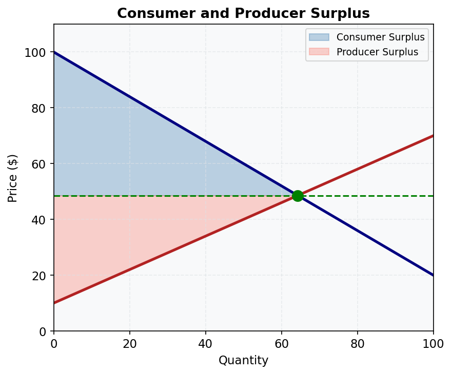
Economic surplus measures the gains from trade.
- Consumer surplus (blue) — area under demand curve, above market price (WTP − price paid)
- Producer surplus (red) — area above supply curve, below market price (price received − minimum acceptable)
- Total surplus = CS + PS = net gain to society from voluntary exchange
- Competitive equilibrium maximises total surplus — key efficiency result
Relevant lessons: M05.L01, M05.L02
4. Short-Run Cost Curves
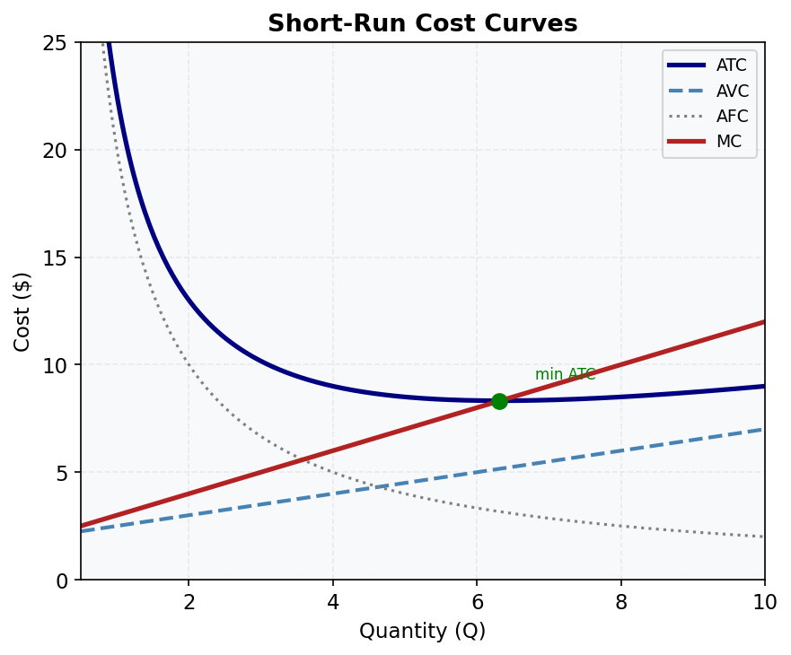
The U-shaped cost curves are central to understanding firm behaviour.
- MC (red) — marginal cost; intersects AVC and ATC at their minimums
- ATC (navy) — average total cost; U-shaped due to falling AFC then rising AVC
- AVC (blue dashed) — average variable cost
- AFC (grey dotted) — always declining (fixed costs spread over more units)
- Shutdown rule: produce if P ≥ AVC; shut down if P < AVC
Relevant lessons: M03.L03, M06.L04
5. Perfect Competition: Market and Firm
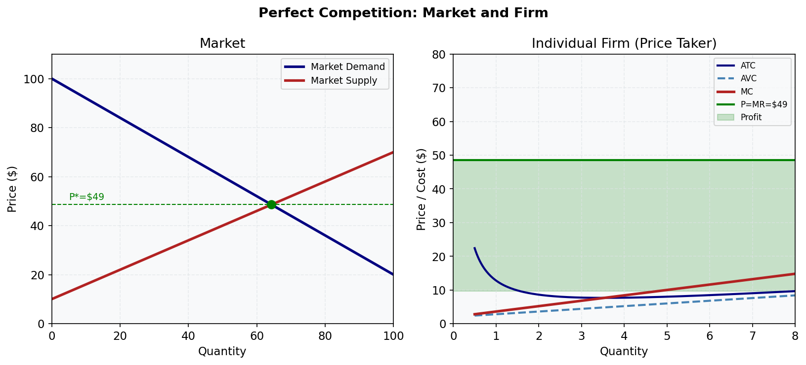
The market determines price; the individual firm takes price as given.
- Left panel: market supply and demand determine P*
- Right panel: firm faces horizontal demand at P* (P = AR = MR)
- Profit-maximising Q: where MC = MR (= P*)
- Green shaded area: economic profit (P > ATC at Q*)
- Long-run: entry eliminates profit until P = min ATC
Relevant lessons: M06.L02, M06.L03, M06.L04, M06.L05
6. Monopoly: Profit Maximisation and Deadweight Loss
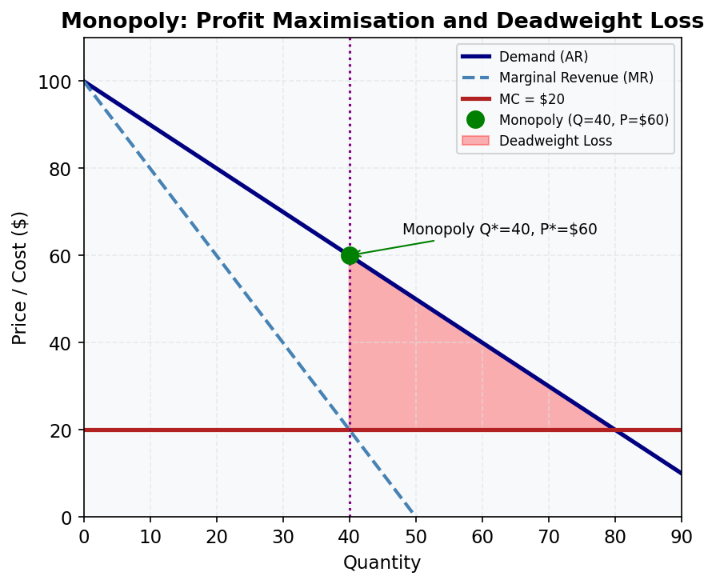
A monopolist restricts output to raise price, creating deadweight loss.
- MR lies below demand (monopolist must cut price on all units to sell more)
- Profit-max: MR = MC → Q = 40, P = $60
- Under perfect competition: P = MC → Q = 80, P = $20
- Deadweight loss (red triangle): units not produced that would create surplus
- ACCC regulates monopoly in Australia to reduce this welfare loss
Relevant lessons: M07.L03, M07.L04
7. Externalities: Negative and Positive
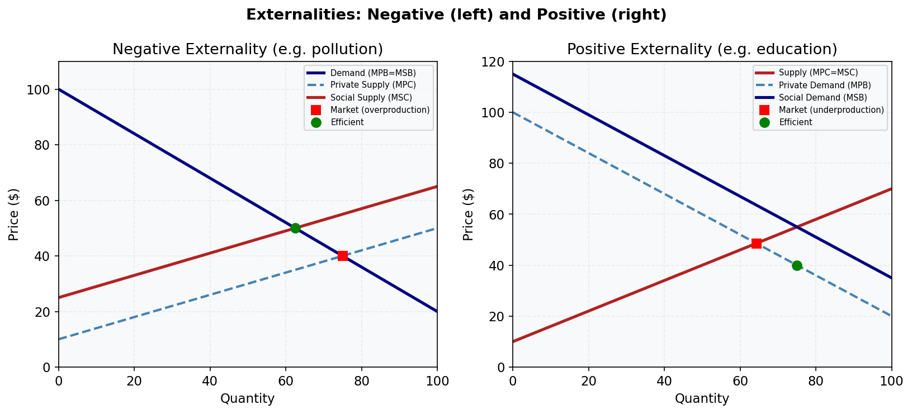
Externalities cause markets to produce too much or too little.
- Negative (left): MSC > MPC → overproduction; Pigouvian tax corrects this
- Positive (right): MSB > MPB → underproduction; subsidy corrects this
- Australian examples: pollution from mining (negative), vaccination and education (positive)
- Carbon price is a Pigouvian tax on CO₂ emissions
Relevant lessons: M10.L01, M10.L03
8. Effects of a Tariff on Imports
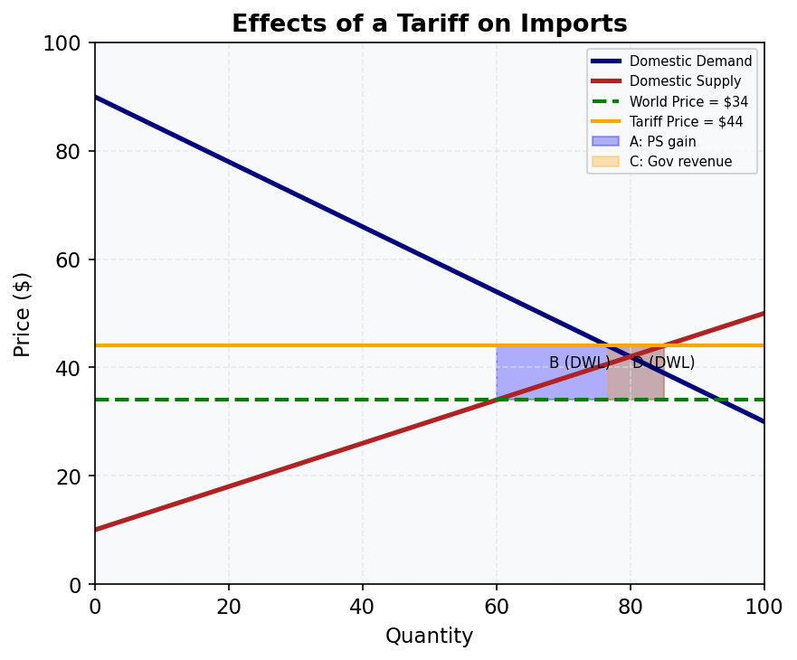
A tariff raises the domestic price, reduces imports, and creates deadweight loss.
- Area A (blue): producer surplus gain (domestic producers benefit)
- Area C (orange): government tariff revenue
- Areas B and D: deadweight loss (efficiency loss from distorted production and consumption)
- Consumers lose A + B + C + D; net welfare loss = B + D
- Australia reduced most tariffs from 25-35% (1970s) to 0-5% (today)
Relevant lessons: M12.L03
9. Indifference Curves and Consumer Optimum
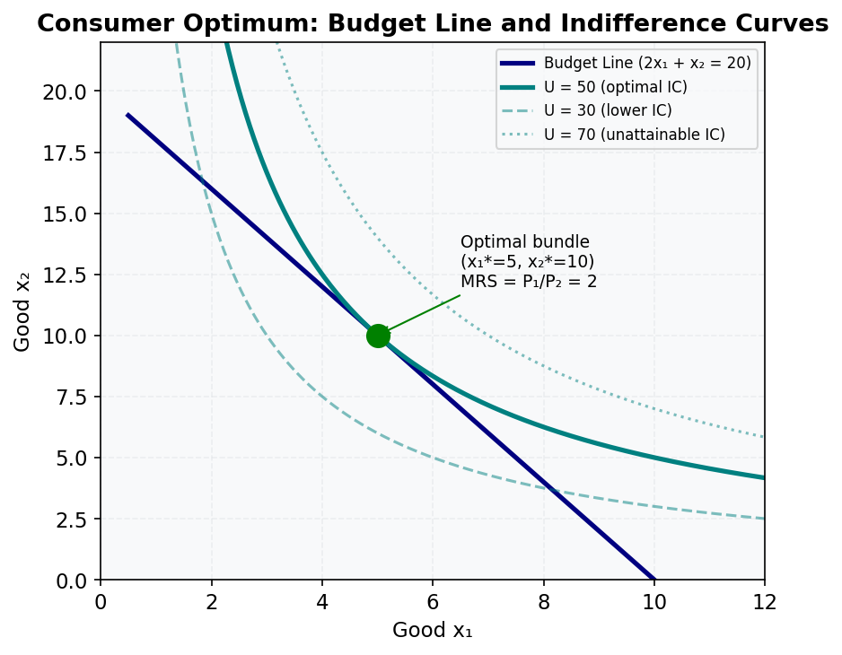
The consumer maximises utility at the tangency of the budget line and the highest attainable indifference curve.
- MRS = P₁/P₂ at the optimum (slope of IC equals slope of budget line)
- Budget line: P₁x₁ + P₂x₂ = m — all affordable bundles
- Higher ICs represent higher utility — consumer wants to reach as high as possible
- Corner solution: occurs when MRS ≠ P₁/P₂ at any interior point (perfect substitutes)
Relevant lessons: M13.L01, M14.L01
10. Slutsky Decomposition
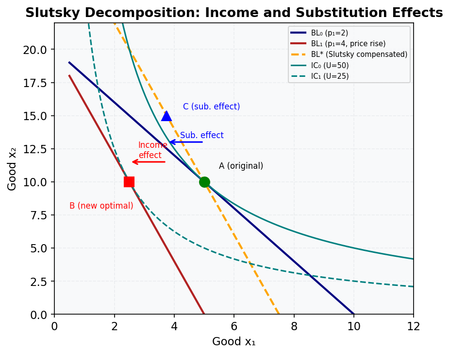
A price rise decomposes into substitution effect (A→C) and income effect (C→B).
- Substitution effect (A→C): always negative for own price — consumer substitutes away from the more expensive good
- Income effect (C→B): negative for normal goods, positive for inferior goods
- Giffen good: income effect dominates and is positive — demand rises when price rises
- Slutsky equation: ∂x₁/∂p₁ = ∂h₁/∂p₁ − x₁ × ∂x₁/∂m
Relevant lessons: M15.L01, M15.L02
11. Edgeworth Box
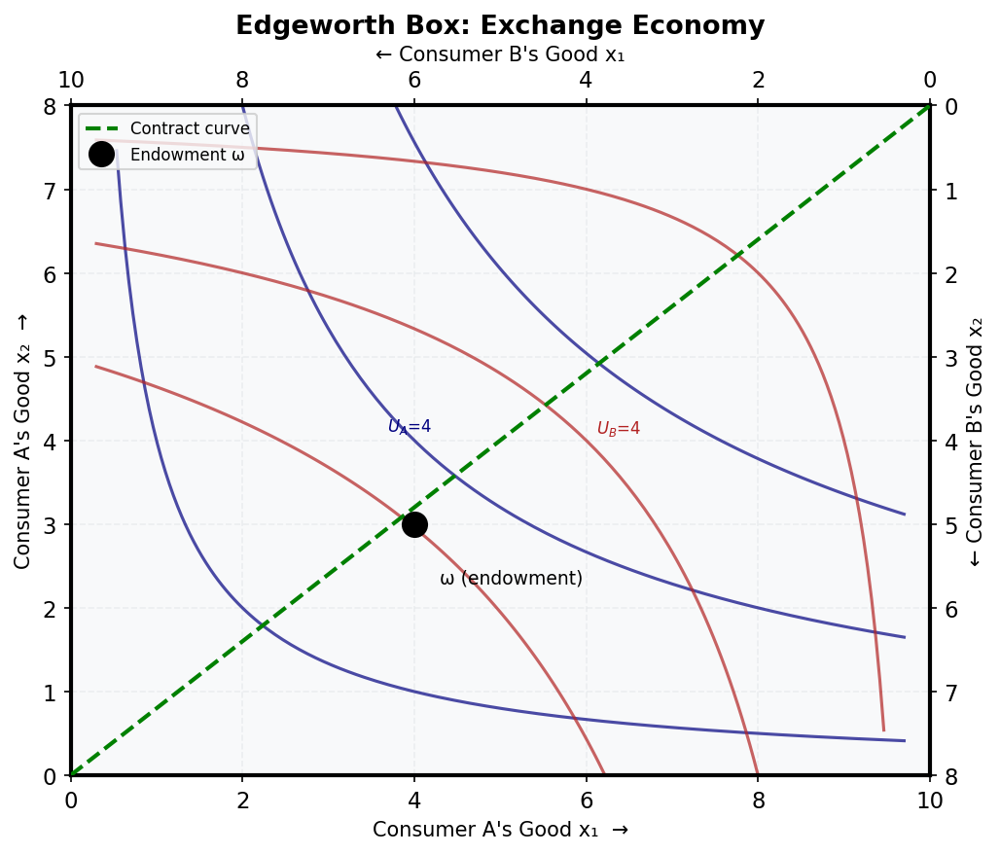
The Edgeworth box shows all feasible allocations of two goods between two consumers.
- Consumer A reads from the bottom-left corner
- Consumer B reads from the top-right corner
- Endowment point ω: initial allocation before trade
- Contract curve (green dashed): locus of Pareto-efficient allocations where MRS_A = MRS_B
- Trade moves both consumers to a point inside the "lens" — making both better off
Relevant lessons: M17.L01, M17.L02
12. Isoquants and Isocost Lines
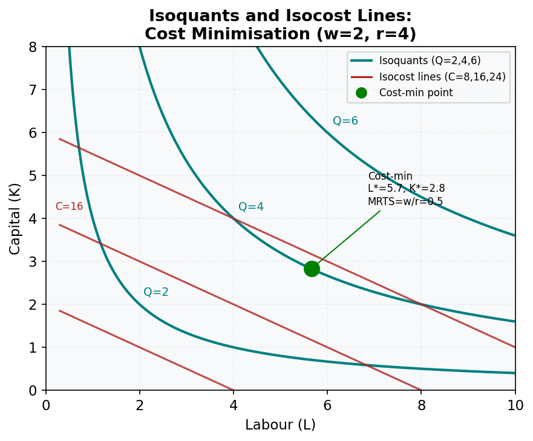
The cost-minimising input combination occurs where the isocost is tangent to the isoquant.
- Isoquant: combinations of L and K producing the same output Q
- Isocost: combinations of L and K costing the same amount C
- Cost-min condition: MRTS = w/r (slope of isoquant equals slope of isocost)
- Shephard's Lemma: ∂c/∂w = L, ∂c/∂r = K — factor demands from the cost function
Relevant lessons: M18.L03
13. Adverse Selection (Akerlof's Lemons)
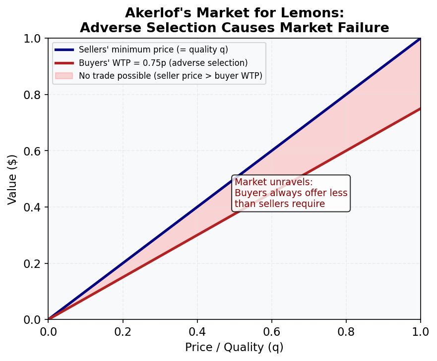
Information asymmetry causes adverse selection — bad types drive out good types.
- Sellers know quality; buyers can only infer average quality at the offered price
- At any price p, only sellers with quality ≤ p sell → average quality = p/2
- Buyers' WTP for average quality = 0.75p < p → no trade is possible
- Solutions: signalling (sellers signal quality), screening, warranties, reputation
Relevant lessons: M21.L01
14. Cournot Duopoly
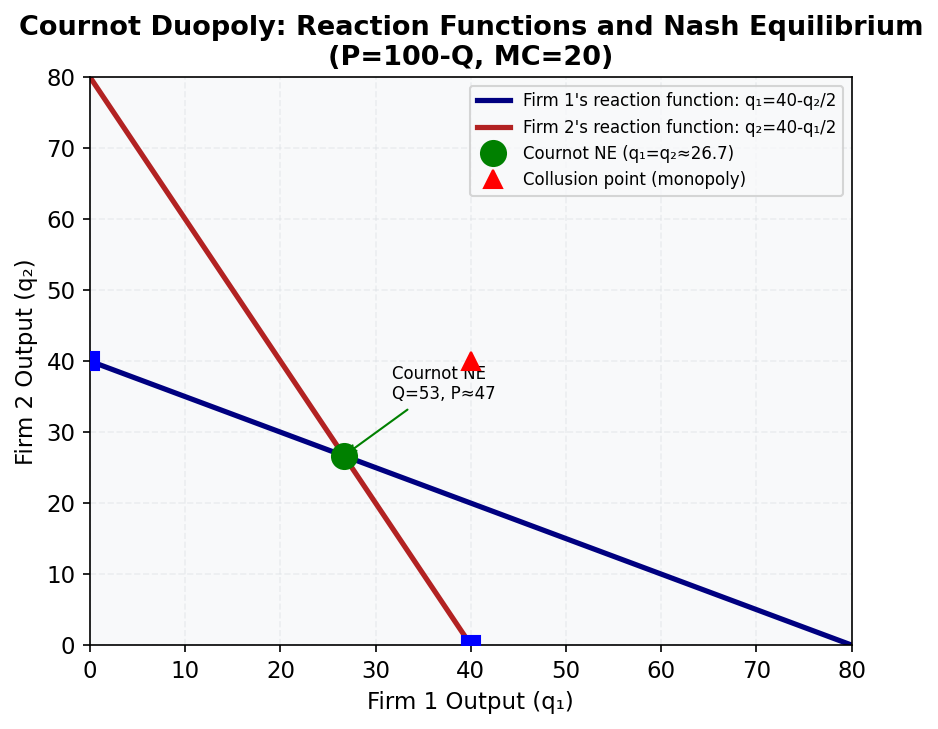
Cournot competition yields an outcome between monopoly and perfect competition.
- Reaction function Firm 1: q₁ = 40 − q₂/2 (best response to rival's output)
- Cournot-Nash equilibrium: q₁ = q₂ = 80/3 ≈ 26.7; Q = 53.3; P ≈ 46.7
- Monopoly: Q = 40, P = 60 (less output, higher price)
- Competitive: Q = 80, P = 20 (more output, lower price)
- Bertrand paradox: price competition → P = MC even with 2 firms
Relevant lessons: M20.L06